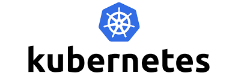

Skills


- 


I am a DevOps engineer passionate about automating and streamlining the software delivery process. With expertise in various DevOps tools and practices, I strive to bridge the gap between development and operations teams to deliver high-quality software efficiently.
Implemented a fully automated CI/CD pipeline using Jenkins, Git, Docker, and Kubernetes, reducing deployment time by 50%.
Developed infrastructure as code templates using Terraform to provision and manage AWS resources, resulting in improved scalability and reliability.
You can reach me at miqbalatif@gmail.com.